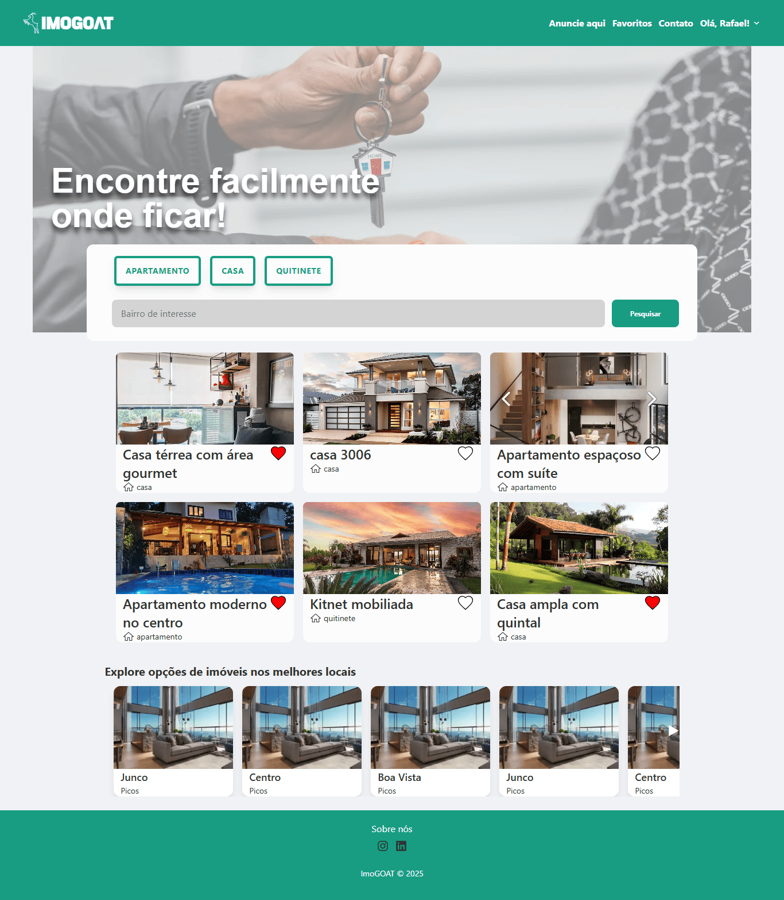
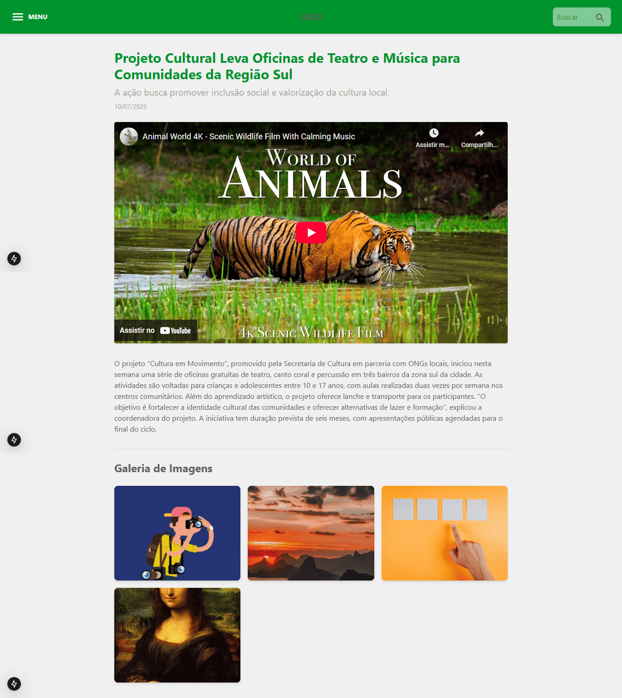

Meus Projetos
Ingresso Express

Tecnologias: React, TypeScript, Tailwind CSS, Node.js, PostgreSQL
Desenvolvimento Front-end de uma aplicação web para compra de cupons de desconto, atuando em ambiente real e aplicando metodologias ágeis (Gitflow, commits semânticos).
ImoGOAT (Em Desenvolvimento)
Tecnologias: Next.js, TypeScript, Tailwind CSS, Docker
Plataforma focada em divulgação de vagas de emprego e aluguel de imóveis na região de Picos, oferecendo um serviço otimizado para conectar locatários e proprietários. Visando excelência e agilidade no mercado imobiliário.
Sistema de Gestão de Conteúdo (Em Desenvolvimento)
Tecnologias: Next.js, TypeScript, Tailwind CSS, Docker, Python (FastAPI, SQLAlchemy), PostgreSQL.
Desenvolvimento de um sistema web completo para gestão de conteúdo, utilizando arquitetura moderna com foco em performance e segurança. Projeto em andamento, sob acordo de confidencialidade.